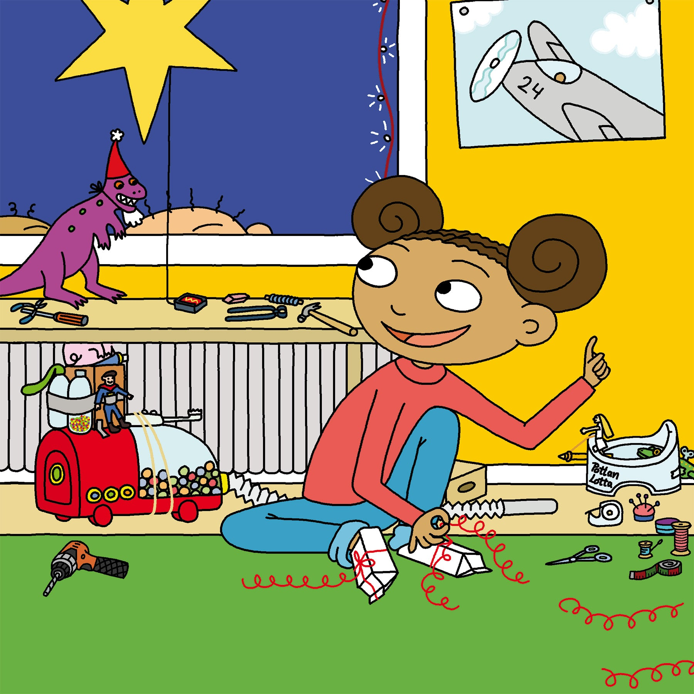

UppfinnarJohanna går Lucia
Ann-Christine Magnusson & Lovisa Lesse
Ingenting går säkert när UppfinnarJohanna har fått en ny idé! Simsala blixt och dunder, jag har mina ljusa stunder! UppfinnarJohanna vet precis vad hon ska klä ut sig till. Hon behöver en hårtork, mjöl och färg. Och ljusslingan från balkongen. Nu är det bara att sätta igång och uppfinna. Det måste bli bästa showen någonsin. I barnboken UppfinnarJohanna går lucia klurar Johanna på hur julshowen kan bli extra rolig, en show som alla garanterat kommer att komma ihåg!
Till Butik >